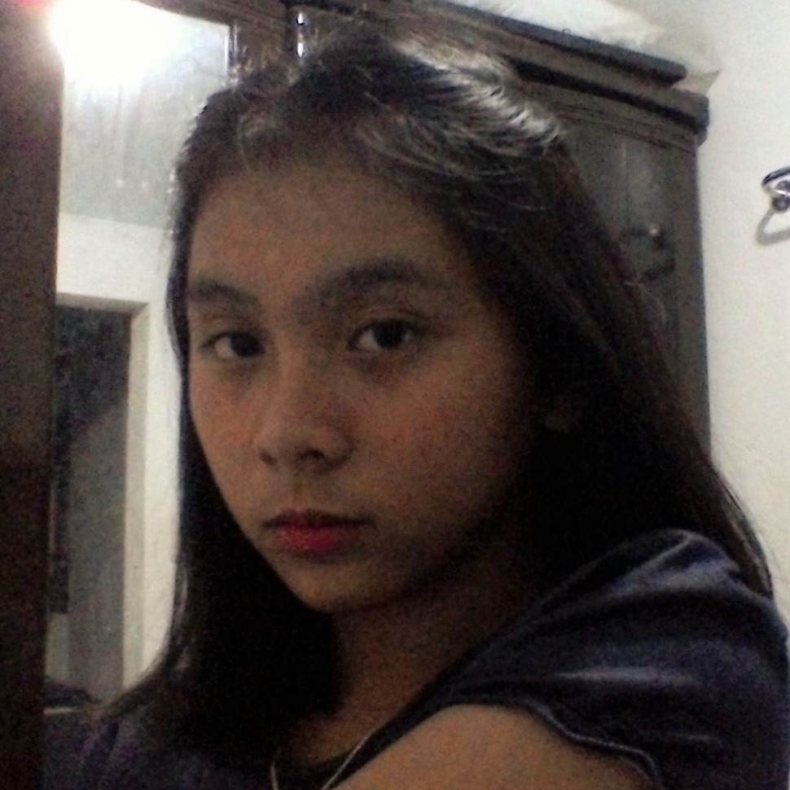
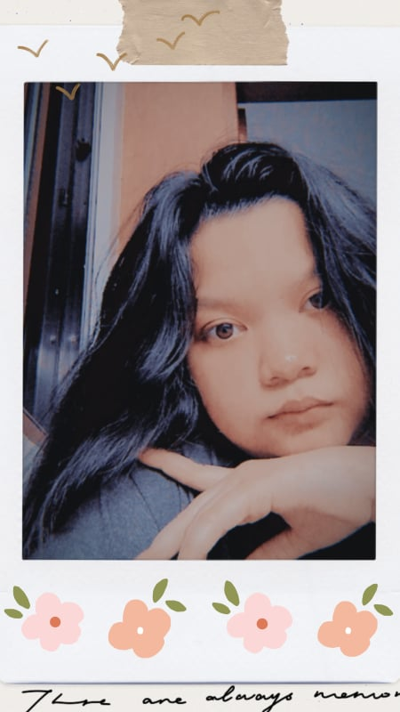
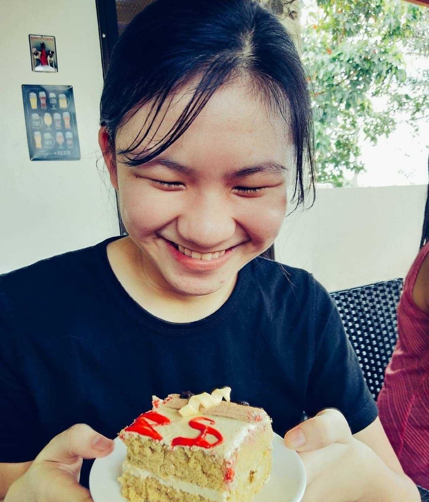

Dr. José Rizal
Maikling Kaalaman

Kapanganakan
Hunyo 19, 1861
Calamba, Laguna
Kamatayan
Disyembre 30, 1896 (edad 35)
Bagumbayan (Luneta ngayon), Maynila
Mga nobela
Noli Me Tangere
El Filibusterismo
Mga pangunahing organisasyon
La Solidaridad
La Liga Filipina
Mga magulang
Francisco Rizal Mercado
Teodora Alonso Realonda
Tungkol kay Dr. José Rizal
Pambansang Bayani ng Pilipinas
Si Dr. José Protacio Rizal Mercado y Alonzo Realonda o mas kilala bilang Dr. José Rizal ay isang Pilipinong bayani at isa sa pinakatanyag na tagapagtaguyod ng pagbabago sa Pilipinas noong panahon ng pananakop ng mga Kastila. Siya ang kinilala bilang pinakamagaling na bayani at itinala bilang isa sa mga pambansang Bayani ng Pilipinas ng Lupon ng mga Pambansang Bayani.
Siya ay ipinanganak noong Hunyo 19, 1861 sa Calamba, Laguna, at ikapitong anak ng mag-asawang Francisco Engracio Rizal Mercado y Alejandro at Teodora Morales Alonzo Realonda y Quintos, at namatay noong Disyembre 30, 1896 sa edad na 35 sa Bagumbayan, Maynila. Siya ay bayani, optalmolohista, at manunulat na naging inspirasyon sa kilusang nasyonalista ng Pilipinas.
Nanggaling si Rizal sa isang mayamang angkan kaya nakapag-aral siya sa Ateneo Municipal de Manila, at nakakuha ng diploma sa Batsilyer ng Sining at nag-aral ng medisina sa Unibersidad ng Santo Tomas sa Maynila. Ipinagpatuloy niya ang kanyang pag-aaral sa Universidad Central de Madrid sa Madrid, Espanya. Naging isang mahusay na mag-aaral sa medikal si Rizal, kaya agad siyang ipinagkatiwala sa reporma ng pamamahala ng mga Espanya sa Pilipinas. Karamihan sa kanyang mga literatura ay isinulat sa Europa, kung saan siya nanirahan sa pagitan ng taong 1882 at 1892.
Noong 1887, inilathala ni Rizal ang kanyang unang nobela, ang Noli Me Tangere o ang Pag-bubunyag ng Kanser ng Lipunan, isang masidhing paglalantad sa masamang pamamahala ng Espanya sa Pilipinas. Ang karugtong o sikwel naman nito ay ang El Filibusterismo o Ang Paghahari ng Kasakiman, pangalawang nobelang isinulat ni Rizal na kanyang inialay sa tatlong paring martir na lalong kilala sa bansag na Gomburza, o Gomez, Burgos, at Zamora.
Nang bumalik si Rizal sa Pilipinas noong 1892, itinatag niya ang isang repormang samahan, ang La Liga Filipina sa Maynila at ipinatapon sa Dapitan, hilagang-kanluran ng Mindanao. Nanatili siyang tapon nang apat na taon, ngunit ang samahang itinatag niya ay naging daan sa pagkabuo ng Katipunan na pinamunuan ni Andrés Bonifacio, na naging lihim na samahan na nagpasimula ng Himagsikang Pilipino laban sa Espanya na naging saligan ng Unang Republika ng Pilipinas sa ilalim ni Emilio Aguinaldo.
Siya ay tagapagtaguyod ng pagkakaroon ng Pilipinas ng sarili nitong pamahalaan sa mapayapang pamamaraan kaysa sa marahas na himagsikan, na susuportahan lamang ang karahasan bilang huling opsyon. Naniniwala si Rizal na ang tanging katuwiran sa pagpapalaya sa Pilipinas at pagkakaroon nito ng sariling pamahalaan ay ang pagbabalik ng karangalan ng mga mamamayan.
"Bakit kalayaan, kung ang mga alipin ngayon ay magiging maniniil ng hinaharap?"
- José Rizal

Monumento ni Rizal sa Maynila
Noli Me Tangere
Mga Kaluluwang Nagdurusa
Kabanata 18
Ang kaligtasan ng bawat kaluluwa kailanman ay walang katapat na halaga. Hindi ito nabibili. Tanging kabutihan ng loob ang susi para sa tunay na kaligtasan.
Mga Suliranin ng Guro
Kabanata 19
Huwag manibugho sa kadiliman ng buhay. Ang bawat araw na darating ay mayroong kasamang bagong pag-asa.
Ang Pulong ng Bayan
Kabanata 20
Sa pagtitimbang ng mga layunin laging alalahanin ang karapatan, kalagayan at kasiyahan ng mga nakakarami laban sa bilang ng iilan lamang.
Kasaysayan ng Isang Ina
Kabanata 21
Ang ina, gaano man kahirap ay hahamakin ang lahat para sa anak na minamahal. Sadyang hindi masusukat ang kanilang pagmamahal.
Liwanag at Dilim
Kabanata 22
Hindi lahat ng tao na nakapalibot sa iyo na nagsisilbing tagapag-protekta sayo ay may tunay at malinis na intensyon.
Aming Grupo

Athena Morillo
Web Developer/Contributor
Hannah Bathan
Web Developer/Contributor
